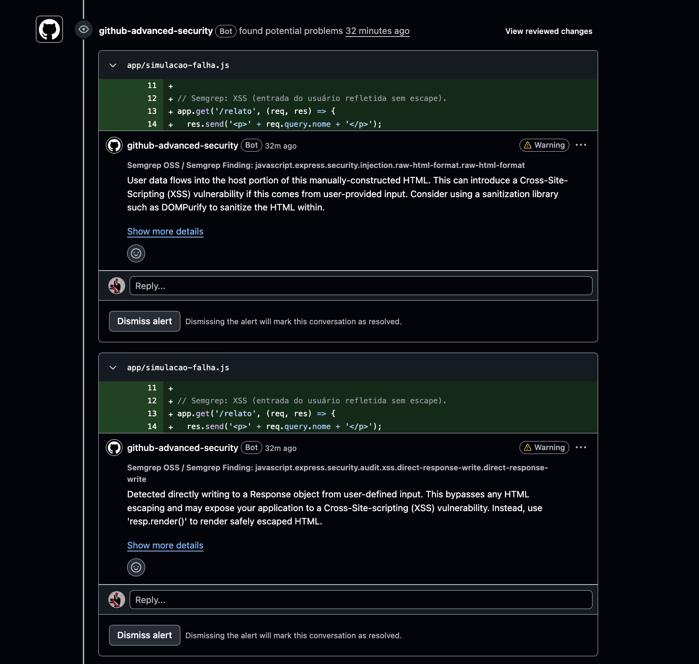
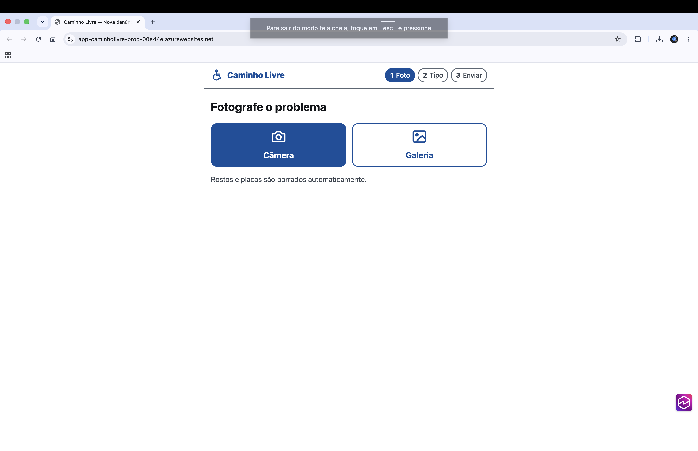
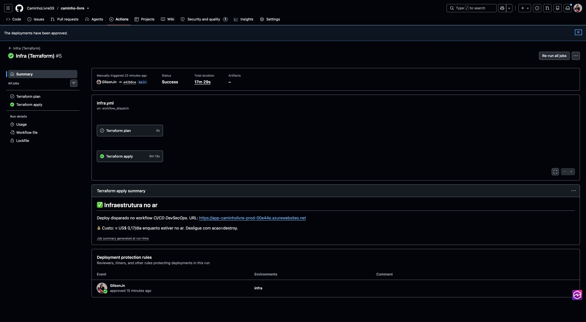
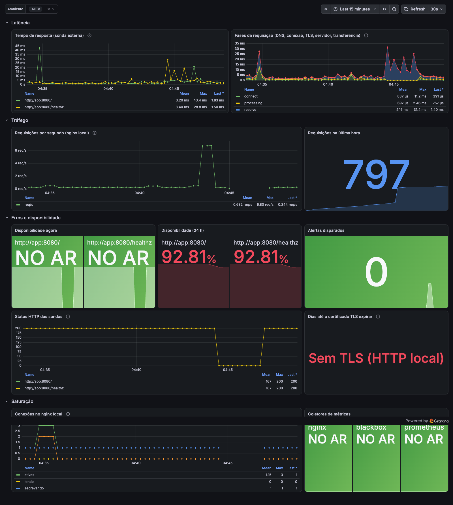

App colaborativo de acessibilidade urbana com visão computacional e pipeline DevSecOps no Microsoft Azure
Integrantes Gilson Dias Gabriel de Mendonça Isabelle Toricelli
Repositório: https://github.com/CaminhoLivreGS/caminho-livre
Aplicação: https://app-caminholivre-prod-00e44e.azurewebsites.net
Novembro de 2026
Sumário
Ficha técnica do MVP
Arquitetura
Pilar 1: container e infraestrutura como código
Pilar 2: pipeline DevSecOps
Pilar 3: observabilidade
Cofre de segredos (Azure Key Vault)
Estimativa de custos (Azure)
Modelo de responsabilidade compartilhada
Estratégia de LGPD
Riscos aceitos
Evidências
Como reproduzir
Todo o código, os workflows e a infraestrutura descritos aqui estão no repositório público. Os links de execuções do GitHub Actions citados permitem conferir cada evidência diretamente.
1. Ficha técnica do MVP
Item
Descrição
Nome do produto
Caminho Livre
Cidadão
Pedestres com deficiência (visual, física, cadeirantes) e com mobilidade reduzida (idosos, gestantes, pessoas com carrinho de bebê), que dependem de calçadas transitáveis.
Problema
Buracos, calçadas quebradas, degraus, piso tátil interrompido, obstáculos e alagamentos impedem a circulação. As denúncias chegam ao poder público sem evidência confiável, duplicadas ou com fotos que expõem pessoas e placas de veículos.
Proposta de valor
Denunciar um problema em 4 passos (Foto, Tipo, Resultado, Enviado), com interface acessível (WCAG 2.1, teclado e leitor de tela). A visão computacional confirma a evidência e anonimiza a foto no próprio aparelho, gerando denúncias verificadas e em conformidade com a LGPD.
Arquitetura
SPA (Vite + JavaScript) com OpenCV.js em Web Worker, servida por nginx non-root em container. Azure App Service (Web App for Containers), Container Registry e Key Vault, provisionados por Terraform, com pipeline DevSecOps no GitHub Actions e observabilidade no Azure Monitor e em Prometheus/Grafana.
Fontes de dados
Fotos enviadas pelo cidadão (processadas só no aparelho). Calibração e testes com 101 fotos de licença livre do Wikimedia Commons, sem pessoas identificáveis. Estrutura pronta para um dataset brasileiro de treino/teste.
Modelos de IA
Visão computacional clássica: Canny, morfologia, limiarização HSV, componentes conexos, Hough e hash perceptual (dHash). Única IA treinada: Haar Cascades do OpenCV 4.9.0 (rosto frontal, perfil e placa), usada só para anonimização. Placas brasileiras detectadas por agrupamento de caracteres.
URL
https://app-caminholivre-prod-00e44e.azurewebsites.net (no ar durante a avaliação; fora dela, desligada para poupar créditos e religada pelo GitHub Actions em cerca de 15 minutos).
Indicadores de impacto
Medidos hoje: acurácia de 65,7% (Acessibilidade), 89,7% (Obstáculo) e 87,0% (Alagamento); 17 de 21 placas brasileiras borradas; 0 fotos reais rejeitadas indevidamente. Metas para o piloto: denúncias validadas por mês; % confirmadas automaticamente; tempo médio até o encaminhamento à prefeitura; 100% das fotos enviadas anonimizadas; disponibilidade ≥ 99% e latência p95 < 2 s.
ODS
ODS 10, Redução das desigualdades (meta 10.2: inclusão de pessoas com deficiência). ODS 11, Cidades e comunidades sustentáveis (meta 11.2: mobilidade acessível; meta 11.7: espaços públicos seguros, inclusivos e acessíveis).
2. Arquitetura
Figura 1. Arquitetura do Caminho Livre (fonte Mermaid em docs/entrega/arquitetura.mmd e no README).
Fluxo
Todo push dispara o pipeline. Testes, validação do Terraform e os scanners de segurança (Gitleaks, Semgrep e Trivy) rodam em paralelo.
Se qualquer verificação falhar, o Gate de segurança reprova e o deploy não acontece.
Na branch main, a mesma imagem analisada pelo Trivy vai para o Azure Container Registry com a tag do commit, e o Web App é atualizado. O login no Azure é feito por OIDC, sem senha guardada.
A infraestrutura é provisionada pelo workflow Infra (Terraform): plan automático e apply/destroy manuais, com aprovação de um revisor.
A foto do cidadão é analisada e anonimizada no navegador. O servidor só entrega arquivos estáticos.
Componentes
Componente
Tecnologia
Função
Aplicação
Vite, JavaScript, OpenCV.js 4.9 (WebAssembly)
Interface acessível e visão computacional no Web Worker
Container
nginx-unprivileged 1.30 (Alpine 3.24), UID 101
Servir os arquivos estáticos com headers de segurança
Hospedagem
Azure App Service Linux F1 (Web App for Containers)
Executar o container com HTTPS e health check
Registro
Azure Container Registry Basic
Imagens versionadas pelo SHA do commit
Segredos
Azure Key Vault (RBAC)
Configuração sensível, lida por Key Vault Reference
3. Pilar 1: container e infraestrutura como código
Dockerfile
Multi-stage: Node 22 só para compilar; o runtime é nginx-unprivileged com o bundle estático (cerca de 35 MB).
Usuário non-root (UID 101), porta 8080. O pipeline verifica e falha se a imagem rodar como root.
Sem segredos na imagem: nenhuma credencial em ARG/ENV; o .dockerignore exclui .env, *.tfvars e *.tfstate.
apk upgrade no build e base atualizada: 0 CVEs HIGH/CRITICAL no Trivy.
Dependências binárias (Haar Cascades) baixadas com verificação de SHA-256.
Headers de segurança no nginx: CSP sem unsafe-inline, HSTS, X-Frame-Options: DENY, Permissions-Policy limitando a câmera à própria origem.
Docker Compose
O docker compose up --build -d sobe o app; com --profile observability, sobe também Prometheus, Blackbox, nginx-exporter e Grafana. Portas publicadas só em 127.0.0.1, sistema de arquivos read-only, cap_drop: ALL, no-new-privileges e limites de CPU e memória. A senha do Grafana é um Docker secret, fora do git.
Terraform
Recurso
Configuração de segurança
Container Registry (Basic)
Sem usuário admin e sem pull anônimo; acesso só por RBAC
App Service Plan F1 + Web App
HTTPS obrigatório, TLS 1.2+, FTP e WebDeploy com senha desligados, health check em /healthz, pull do ACR pela identidade gerenciada (AcrPull)
Key Vault
Autorização só por RBAC; ver seção 6
Log Analytics + App Insights
Retenção de 30 dias, teto de 0,1 GB/dia, IP mascarado
Alertas e Workbook
4 alertas de métrica com e-mail; ver seção 5
Budget da assinatura
US$ 10/mês, alertas em 50%, 80% e 100% do gasto real e 100% do previsto
Regras exigidas
tfstate e .tfvars fora do repositório: o estado fica num Azure Blob Storage com autenticação só por Entra ID (chaves desligadas), versionamento e soft delete de 14 dias. backend.hcl, terraform.tfvars e *.tfstate estão no .gitignore; no CI, as variáveis vêm de GitHub Secrets e Variables.
Portas de administração nunca abertas para 0.0.0.0/0: o App Service só expõe 80/443 (HTTP redireciona para HTTPS). O site de administração (SCM/Kudu, por onde passa o SSH) é negado para todos por padrão; com a infra no ar, ele respondeu HTTP 403 a acessos pela internet. A variável admin_cidrs libera IPs específicos, e sua validação rejeita qualquer faixa maior que /16, incluindo 0.0.0.0/0.
Fundação e identidades do pipeline
O tfstate e as 3 identidades do GitHub ficam num resource group que nunca é destruído (infra/bootstrap/fundacao.sh). Se ficassem no Terraform principal, o destroy apagaria a identidade que o CI usa para recriar a infra.
Identidade
Environment
Permissões
deploy
production (só a main)
AcrPush/Reader no ACR e Website Contributor no Web App
plan
infra-plan
Reader na assinatura, leitura do tfstate e Key Vault Secrets User
apply
infra (só a main + aprovação)
Contributor + administração de RBAC limitada por condição ABAC aos 6 papéis que o Terraform atribui; não consegue conceder Owner nem Contributor
As credenciais federadas OIDC usam os IDs imutáveis do repositório (repo:CaminhoLivreGS@355958631/caminho-livre@1456200921:environment:...), então um repositório recriado com o mesmo nome não herda o acesso. Locks CanNotDelete (resource group) e ReadOnly (identidades) impedem que a identidade de apply apague o tfstate ou adicione credenciais federadas para outro repositório. Contributor não remove locks; um teste até com Owner retornou ScopeLocked.
4. Pilar 2: pipeline DevSecOps
Dois workflows no GitHub Actions: main.yml (CI/CD DevSecOps), em todo push, PR para a main e manualmente; e infra.yml (Infra Terraform), com plan automático e apply/destroy manuais.
Job
O que faz
Bloqueia quando
Testes e build
23 testes unitários do núcleo de visão + build de produção
Algum teste falha
Terraform
fmt -check e validate
Formatação ou sintaxe inválida
Observabilidade
promtool check e testes unitários das regras de alerta
Config ou regra inválida
Gitleaks
Segredos em todo o histórico git
Qualquer segredo encontrado
Semgrep
SAST: JavaScript, React, segredos, Dockerfile, nginx e Terraform
Risco ALTO ou CRÍTICO (matriz OWASP: probabilidade × impacto)
Trivy
CVEs da imagem, segredos na imagem, misconfigurações de Dockerfile e Terraform, usuário non-root
CVE HIGH/CRITICAL com correção, ou misconfiguração HIGH/CRITICAL
Gate de segurança
Consolida os resultados
Qualquer job anterior falhou
Deploy (Azure)
Localiza ACR e Web App pela tag, envia a imagem aprovada, atualiza o Web App e faz smoke test
Só na main, com o gate aprovado
Terraform plan
Plano com a identidade de leitura (-lock=false)
Erro no plano
Terraform apply/destroy
Plano + aplicação; o apply dispara o deploy
Exige aprovação no environment infra
Controles
GitHub Secrets:AZURE_TENANT_ID, AZURE_SUBSCRIPTION_ID e ALERT_EMAIL no repositório; AZURE_CLIENT_ID em cada environment (uma identidade por função). São identificadores: o login é OIDC, sem senha de longa duração.
Os valores dos secrets são mascarados nos logs públicos, e o arquivo de plan não é publicado como artefato. Durante a validação, um nome de recurso derivado do e-mail escapou da máscara; o código foi corrigido, o log foi apagado e os logs seguintes foram verificados sem nenhum fragmento do e-mail, da assinatura ou do tenant.
Actions de terceiros fixadas por SHA de commit; permissions mínimas por job.
main protegida: exige PR, o check "Gate de segurança" e conversas resolvidas; force push e exclusão bloqueados, também para admins.
Relatórios SARIF no GitHub Code Scanning e como artefatos por 30 dias.
Bloqueio automático (simulação de falha)
O PR #3 introduziu de propósito: uma connection string falsa do Azure Storage (Gitleaks), XSS e segredo JWT fixo (Semgrep, 2 achados ALTO) e a imagem base antiga sem apk upgrade (Trivy). Os três scanners reprovaram, o gate mostrou "DEPLOY BLOQUEADO", o deploy não rodou e a proteção da main impediu o merge. O PR foi fechado sem merge. Evidências na seção 11.
5. Pilar 3: observabilidade
As 4 Métricas de Ouro (Google SRE) são monitoradas em duas camadas.
Um Workbook "Caminho Livre - Métricas de Ouro" reúne os painéis no portal. Localmente, o Blackbox Exporter sonda a URL do Azure e o container; o Grafana já vem configurado com o dashboard, e 7 regras de alerta (indisponibilidade, 5xx, latência, saturação, pico de tráfego, certificado TLS expirando e coletor fora do ar) têm testes unitários no CI.
Como a visão computacional roda no celular do cidadão, a CPU do container serve só arquivos estáticos. Por isso, os alertas principais são de erros e latência, e o de CPU protege a cota de 60 minutos de CPU por dia do plano F1.
Evidência: o alerta de disponibilidade (Sev1) disparou no Azure enquanto o app respondia 503, antes do primeiro deploy, e se resolveu sozinho depois. Localmente, uma queda simulada disparou AplicacaoIndisponivel em 2 minutos.
6. Cofre de segredos (Azure Key Vault)
Estratégia principal: não ter segredos de longa duração. O deploy usa OIDC (sem client secret), o Web App puxa imagens do ACR com identidade gerenciada (o ACR não tem usuário admin) e a aplicação é estática. Ainda assim, um Key Vault foi criado para guardar a configuração sensível que existe hoje e servir ao backend futuro.
Autorização só por RBAC, sem access policies. Papéis com escopo no cofre: Key Vault Secrets User para o Web App e para o plan, Key Vault Secrets Officer só para a identidade de apply.
Key Vault Reference: a app setting APPLICATIONINSIGHTS_CONNECTION_STRING guarda só o endereço do segredo (@Microsoft.KeyVault(SecretUri=...)); o App Service resolve o valor com a identidade gerenciada. Status verificado: Resolved.
Segredo write-only (value_wo): o recurso do segredo não guarda o valor no tfstate. A mesma connection string ainda aparece no estado como atributo do próprio Application Insights, por isso o tfstate é protegido (só Entra ID, sem chaves, acesso por RBAC).
Soft delete de 7 dias; segredo com tipo de conteúdo e data de expiração.
Riscos aceitos (seção 10): firewall do cofre aberto à rede pública e purge protection desligada.
7. Estimativa de custos (Azure)
Preços de tabela em USD, região eastus, consultados na API oficial de preços do Azure (prices.azure.com/api/retail/prices) em 13/11/2026. A assinatura Azure for Students só permite as regiões eastus, southcentralus, canadacentral, mexicocentral e southafricanorth.
Recurso
SKU
Preço unitário
Custo/mês (MVP)
App Service Plan Linux
F1 (Free)
US$ 0
US$ 0,00
Container Registry
Basic (10 GB inclusos)
US$ 0,1666/dia
US$ 5,00
Key Vault
Standard
Sem mensalidade; US$ 0,03 a cada 10 mil operações
≈ US$ 0,00
Log Analytics
Pay-as-you-go
5 GB/mês grátis; depois US$ 2,30/GB
US$ 0,00 (teto ≈ 3 GB/mês)
Application Insights + Workbook
Baseado em workspace
Incluso no Log Analytics
US$ 0,00
Alertas de métrica (4)
10 primeiros grátis; depois US$ 0,10/mês
US$ 0,00
Action group (e-mail)
1.000 e-mails/mês grátis
US$ 0,00
Storage do tfstate
Standard LRS
Poucos KB
< US$ 0,01
Identidades, RBAC, locks, budget
Sem custo
US$ 0,00
Total
≈ US$ 5,00/mês (≈ US$ 0,17/dia)
Cenário de produção (referência): App Service B1 (US$ 0,017/h ≈ US$ 12,41/mês), que adiciona Always On, sem cold start e com SLA, totalizando ≈ US$ 17,40/mês. Com B1, também passaria a ser viável a VNet Integration para fechar o firewall do Key Vault.
Estratégia de economia
Plano F1 gratuito no MVP e teto diário de ingestão de logs.
Budget com alertas por e-mail em 50%, 80% e 100%.
Infraestrutura desligada fora das janelas de avaliação (workflow Infra, ação destroy) e religada sob demanda (apply). A fundação permanece por menos de US$ 0,01/mês.
Gasto real da sessão de validação (cerca de 2 h no ar, com deploy, simulação de falha e alerta): em torno de US$ 0,01.
8. Modelo de responsabilidade compartilhada
O Azure App Service é um serviço PaaS: a Microsoft opera a plataforma, e a equipe responde pelo que roda nela e por como ela é configurada.
Camada
Microsoft
Equipe
Como a equipe cumpre
Datacenter, hardware e rede física
✔
SO do host e virtualização
✔
Runtime do App Service, balanceador, patches da plataforma
✔
Certificado TLS de *.azurewebsites.net
✔
Imagem do container
✔
Trivy bloqueia CVEs HIGH/CRITICAL; apk upgrade; base atualizada
Código da aplicação
✔
Semgrep, testes unitários, revisão por PR
Segredos e credenciais
Fornece o Key Vault
✔
Sem segredos de longa duração (OIDC, identidade gerenciada); Key Vault por RBAC; Gitleaks; GitHub Secrets
Identidade e acesso
Fornece Entra ID e RBAC
✔ configura
Menor privilégio por função; ABAC no apply; locks contra escalada
Rede e exposição
Fornece os controles
✔ configura
HTTPS, TLS 1.2, SCM/SSH negado, sem 0.0.0.0/0
Dados e privacidade
Protege a infraestrutura
✔
Anonimização no aparelho, IP mascarado, retenção limitada
Monitoramento e resposta
Fornece o Azure Monitor
✔ configura
Métricas de Ouro, 4 alertas, budget
Estado da infraestrutura
Durabilidade do Blob Storage
✔
tfstate remoto, sem chaves, versionado, fora do git
Em IaaS (máquinas virtuais), o patch do sistema operacional, o firewall do host e o SSH passariam à equipe; por isso o PaaS foi escolhido para o MVP.
9. Estratégia de LGPD
Princípios aplicados (art. 6º): finalidade, necessidade (minimização), segurança e prevenção.
Anonimização antes de sair do aparelho. A foto é processada no navegador, num Web Worker com OpenCV.js. Rostos (frontal e perfil) e placas de veículos são detectados e borrados, e o cidadão pode borrar áreas extras. Só a imagem anonimizada pode ser enviada.
Sem metadados. O envio usa o canvas re-renderizado: os dados EXIF (GPS, modelo da câmera, data) são descartados.
Nenhuma foto no servidor, no MVP. O backend de denúncias ainda não existe e o app roda em modo demonstração: nada sai do aparelho. O container só entrega arquivos estáticos e não recebe uploads.
Trânsito protegido. HTTPS obrigatório com TLS 1.2+ e HSTS. A CSP connect-src 'self' impede o envio de dados a outros domínios.
Telemetria mínima. Sem cookies de rastreamento nem SDK de analytics no front-end; Application Insights com IP mascarado. Os logs HTTP do App Service (URL, status, IP e user agent) servem à segurança e operação (legítimo interesse, art. 7º, IX), com retenção de 30 dias.
Dataset sem pessoas. O repositório é público, então todas as fotos com pessoas identificáveis foram retiradas do dataset de testes, mesmo tendo licença livre.
Dados pessoais da equipe. O e-mail de alertas fica num GitHub Secret, mascarado nos logs; prints com e-mail pessoal não foram publicados.
Região de dados. A política da assinatura acadêmica não permite brazilsouth; a infraestrutura fica em eastus. Como as fotos não vão para a nuvem, só logs operacionais ficam fora do Brasil, sob as cláusulas contratuais de proteção de dados da Microsoft (art. 33). Em produção, recomenda-se brazilsouth.
Próximos passos para o backend: autenticação do cidadão, limite de envios, deduplicação pelo hash perceptual, fila de moderação para casos inconclusivos, criptografia em repouso das imagens anonimizadas (chaves no Key Vault), política de retenção e canal para os direitos do titular (art. 18).
10. Riscos aceitos
Achados dos scanners que não se aplicam ao MVP ou que dependem de recursos pagos. Cada um está registrado no código (.trivyignore ou comentário nosemgrep), com justificativa e revisão prevista.
Achado
Justificativa
Controle compensatório / revisão
AZU-0003: App Service sem autenticação
App cidadão público; o conteúdo estático não deve exigir login
Autenticação exigida no backend de denúncias
AZU-0001: sem certificado de cliente
mTLS é para máquina-a-máquina; cidadãos usam navegador comum
HTTPS obrigatório
AZU-0013 (CRITICAL): firewall do Key Vault aberto
O Web App só alcança um cofre com firewall por VNet Integration, indisponível no F1; os runners do GitHub não têm IP fixo
RBAC, papéis com escopo no cofre, segredo write-only, TLS. Revisar ao migrar para B1
AZU-0016 / Semgrep keyvault-purge-enabled
A infra é destruída e recriada entre avaliações; com purge protection, o nome ficaria bloqueado por até 90 dias
Soft delete de 7 dias. Em produção, ligar
11. Evidências
11.1 Bloqueio automático (PR #3, simulação de falha)
Figura 2. Gitleaks detecta a connection string (falsa) do Azure Storage no código.

Figura 3. Semgrep aponta XSS: raw-html-format (ALTO, bloqueia) e direct-response-write (MÉDIO, só registrado).Figura 4. Semgrep aponta segredo de JWT fixo (ALTO); o PR termina com "This branch has not been deployed".
Figura 5. Gate de segurança: DEPLOY BLOQUEADO.Figura 6. Trivy: 68 vulnerabilidades (65 HIGH, 3 CRITICAL) na imagem com Alpine 3.21.3.
11.2 Pipeline aprovado e deploy no Azure
Figura 7. Run aprovado: 6 verificações em paralelo, gate aprovado e deploy no Azure (OIDC, push no ACR, smoke test).

Figura 8. Aplicação no ar no Azure App Service.

Figura 9. Workflow Infra (Terraform): apply aprovado manualmente no environment infra, infraestrutura criada e deploy disparado.
11.3 Observabilidade e alertas
Figura 10. Azure Monitor: alerta de disponibilidade (Sev1) disparado e resolvido.Figura 11. Detalhe do alerta: HealthCheckStatus caiu de 100 para 0 e voltou ao normal.

Figura 12. Grafana local: Métricas de Ouro durante a queda simulada (alerta AplicacaoIndisponivel em 2 minutos).
11.4 Notificações do GitHub
Figura 13. E-mail do GitHub Code Scanning com os achados do Semgrep no PR #3.
No primeiro commit da simulação (34ae35f), o Trivy falhou por um erro de sintaxe no Dockerfile, e não por CVEs; a execução válida é a do commit 3719912, mostrada na Figura 6. As notificações das duas tentativas estão em docs/evidencias/.
Figura 14. Notificação do run reprovado (push, 3719912).Figura 15. Notificação do run reprovado (PR, 3719912).
12. Como reproduzir
Uma vez (Owner da assinatura)
az login
sh infra/bootstrap/fundacao.sh # tfstate + identidades + locks
EMAIL_ALERTA=voce@exemplo.com sh infra/scripts/configurar-github.sh # environments, secrets, variables
Ligar e desligar a infraestrutura
GitHub → Actions → Infra (Terraform) → Run workflow (branch main) → acao = apply ou destroy → aprovação no environment infra. O apply cria os 24 recursos e dispara o deploy da aplicação (cerca de 15 minutos).
Localmente
docker compose up --build -d # app em http://127.0.0.1:8080
openssl rand -base64 24 > observability/grafana/admin-password
docker compose --profile observability up --build -d # + Prometheus/Grafana
npm install && npm run deps && npm test # testes unitários